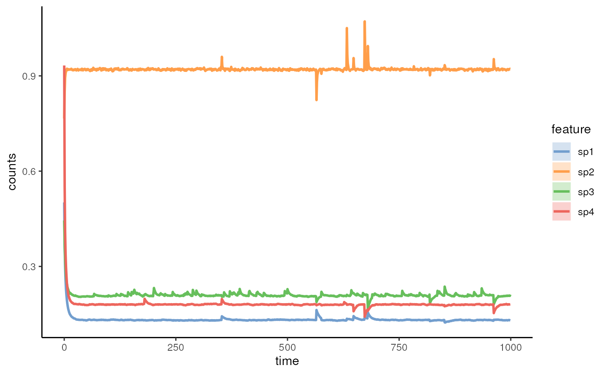
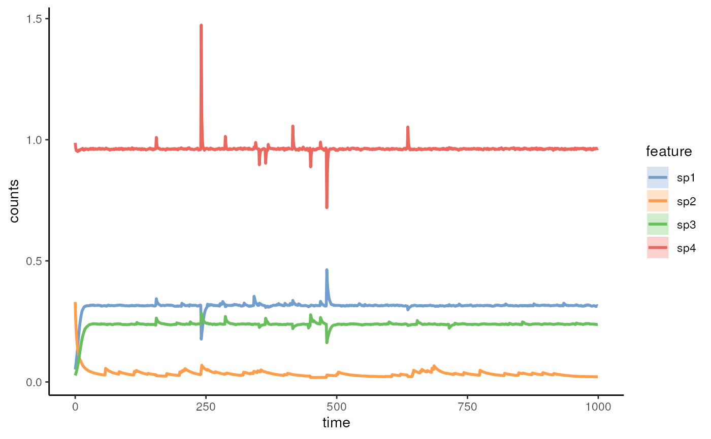
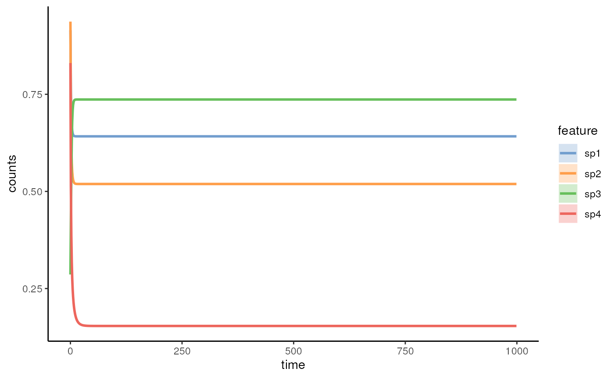
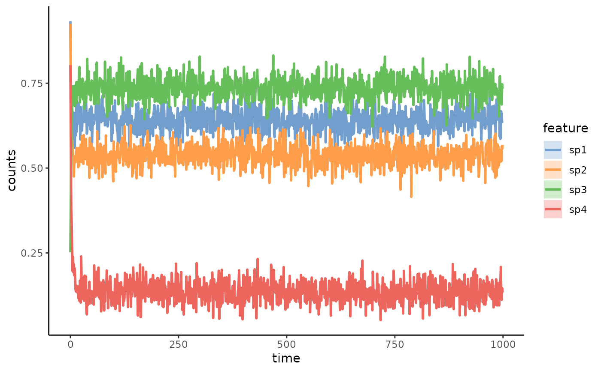

Simulates time series with the generalized Lotka-Volterra model.
simulateGLV(
n_species,
names_species = NULL,
A = NULL,
x0 = NULL,
growth_rates = NULL,
sigma_drift = 0.001,
sigma_epoch = 0.1,
sigma_external = 0.3,
sigma_migration = 0.01,
epoch_p = 0.001,
t_external_events = NULL,
t_external_durations = NULL,
stochastic = TRUE,
migration_p = 0.01,
metacommunity_probability = NULL,
error_variance = 0,
norm = FALSE,
t_end = 1000,
...
)Integer: number of species
Character: names of species. If NULL,
paste0("sp", seq_len(n_species)) is used.
(default: names_species = NULL)
matrix: interaction matrix defining the positive and negative
interactions between n_species. If NULL, randomA(n_species) is used.
(default: A = NULL)
Numeric: initial abundances of simulated species. If NULL,
runif(n = n_species, min = 0, max = 1) is used.
(default: x0 = NULL)
Numeric: growth rates of simulated species. If NULL,
runif(n = n_species, min = 0, max = 1) is used.
(default: growth_rates = NULL)
Numeric: standard deviation of a normally distributed
noise applied in each time step (t_step)
(default: sigma_drift = 0.001)
Numeric: standard deviation of a normally distributed
noise applied to random periods of the community composition with frequency
defined by the epoch_p parameter
(default: sigma_epoch = 0.1)
Numeric: standard deviation of a normally distributed
noise applied to user-defined external events/disturbances
(default: sigma_external = 0.3)
Numeric: standard deviation of a normally distributed
variable that defines the intensity of migration at each time step (t_step)
(default: sigma_migration = 0.01)
Numeric: the probability/frequency of random periodic
changes introduced to the community composition
(default: epoch_p = 0.001)
Numeric: the starting time points of defined
external events that introduce random changes to the community composition
(default: t_external_events = NULL)
Numeric: respective duration of the external
events that are defined in the 't_external_events' (times) and
sigma_external (std).
(default: t_external_durations = NULL)
Logical: whether to introduce noise in the simulation.
If False, sigma_drift, sigma_epoch, and sigma_external are ignored.
(default: stochastic = FALSE)
Numeric: the probability/frequency of migration from a
metacommunity.
(default: migration_p = 0.01)
Numeric: Normalized probability distribution
of the likelihood that species from the metacommunity can enter the community
during the simulation. If NULL, rdirichlet(1, alpha = rep(1,n_species)) is
used.
(default: metacommunity_probability = NULL)
Numeric: the variance of measurement error.
By default it equals to 0, indicating that the result won't contain any
measurement error. This value should be non-negative.
(default: error_variance = 0)
Logical: whether the time series should be returned with
the abundances as proportions (norm = TRUE) or
the raw counts (default: norm = FALSE)
(default: norm = FALSE)
Numeric: the end time of the simulationTimes, defining the
modeled time length of the community.
(default: t_end = 1000)
additional parameters, see utils to know more.
simulateGLV returns a TreeSummarizedExperiment class object
Simulates a community time series using the generalized Lotka-Volterra model, defined as dx/dt = x(b+Ax), where x is the vector of species abundances, diag(x) is a diagonal matrix with the diagonal values set to x. A is the interaction matrix and b is the vector of growth rates.
# generate a random interaction matrix
ExampleA <- randomA(n_species = 4, diagonal = -1)
# run the model with default values (only stochastic migration considered)
ExampleGLV <- simulateGLV(n_species = 4, A = ExampleA)
# visualize the result
miaViz::plotSeries(ExampleGLV, x = "time")
#> Warning: no non-missing arguments to max; returning -Inf
#> Warning: no non-missing arguments to max; returning -Inf
#> Warning: no non-missing arguments to max; returning -Inf
#> Warning: no non-missing arguments to max; returning -Inf

# run the model with two external disturbances at time points 240 and 480
# with durations equal to 1 (10 time steps when t_step by default is 0.1).
ExampleGLV <- simulateGLV(
n_species = 4, A = ExampleA,
t_external_events = c(0, 240, 480), t_external_durations = c(0, 1, 1)
)
# visualize the result
miaViz::plotSeries(ExampleGLV, x = "time")
#> Warning: no non-missing arguments to max; returning -Inf
#> Warning: no non-missing arguments to max; returning -Inf
#> Warning: no non-missing arguments to max; returning -Inf
#> Warning: no non-missing arguments to max; returning -Inf

# run the model with no pertubation nor migration
set.seed(42)
ExampleGLV <- simulateGLV(
n_species = 4, A = ExampleA, stochastic = FALSE,
sigma_migration = 0
)
# visualize the result
miaViz::plotSeries(ExampleGLV, x = "time")
#> Warning: no non-missing arguments to max; returning -Inf
#> Warning: no non-missing arguments to max; returning -Inf
#> Warning: no non-missing arguments to max; returning -Inf
#> Warning: no non-missing arguments to max; returning -Inf

# run the model with no pertubation nor migration but with measurement error
set.seed(42)
ExampleGLV <- simulateGLV(
n_species = 4, A = ExampleA, stochastic = FALSE,
error_variance = 0.001, sigma_migration = 0
)
# visualize the result
miaViz::plotSeries(ExampleGLV, x = "time")
#> Warning: no non-missing arguments to max; returning -Inf
#> Warning: no non-missing arguments to max; returning -Inf
#> Warning: no non-missing arguments to max; returning -Inf
#> Warning: no non-missing arguments to max; returning -Inf
